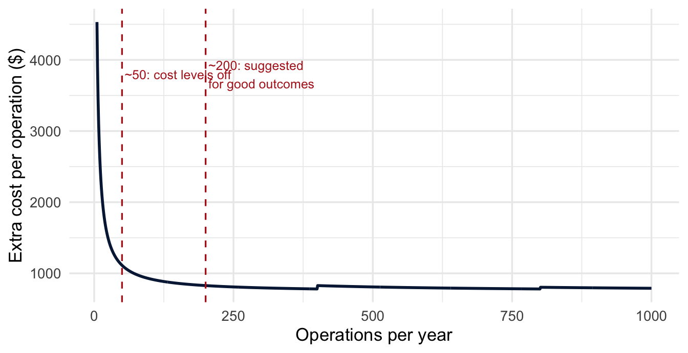
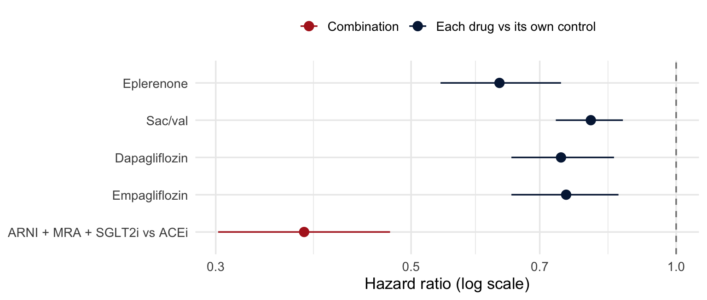
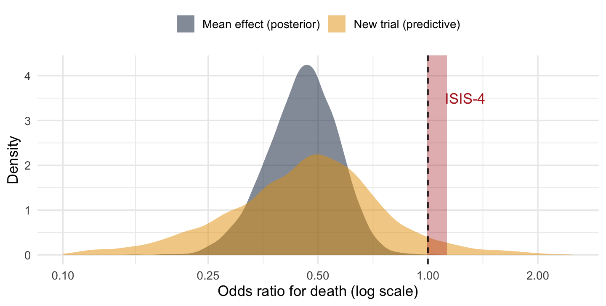
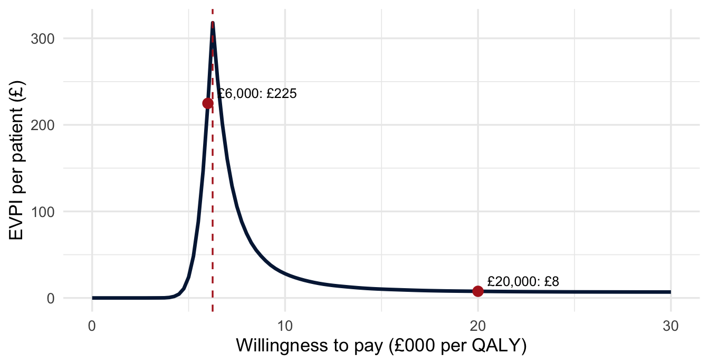
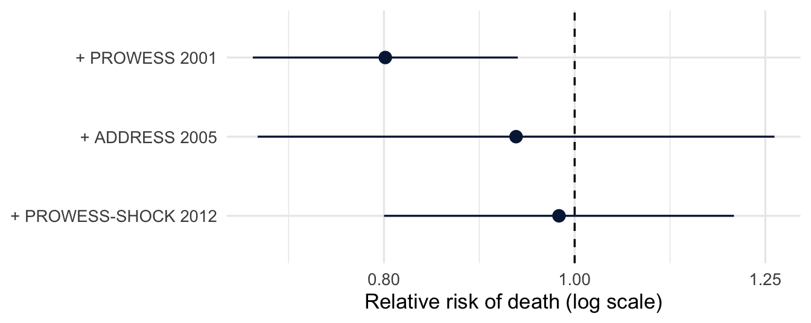

distinguish the question answered by a systematic review from the question answered by a health technology assessment (HTA);
use the GRADE Evidence-to-Decision (EtD) framework, and explain why decisions need absolute effects;
carry out an adjusted indirect comparison, and explain why ranking add-on therapies as alternatives answers the wrong question;
explain QALYs, ICERs and net monetary benefit, and build a simple Markov model whose inputs are meta-analytic estimates;
propagate uncertainty by probabilistic sensitivity analysis, and summarise it with the cost-effectiveness acceptability curve;
explain the Bayesian character of HTA, and use a predictive distribution to ask whether more research is needed;
calculate the expected value of perfect and partial perfect information, and use them to judge whether research is worth funding;
recognise failures of the HTA process in two historical cases.
R packages:dplyr, tidyr, purrr, ggplot2, metafor, mgcv, patchwork, knitr; brms for code shown but not run here (its posterior draws are read from a file).
A systematic review answers the question “what is the effect of treatment X on outcome Y?”. A health technology assessment answers a different one: “should treatment X be funded for population Z at price P, compared with everything else we could do with the money?”. Bridging the two needs structured deliberation, comparisons against every relevant alternative, economic modelling, and a way to judge whether the current evidence is good enough to decide. The running example in this chapter is dapagliflozin for heart failure with reduced ejection fraction (HFrEF), appraised by England’s National Institute for Health and Care Excellence (NICE) in 2021.
22.1 Why HTA?
Technology assessment began in the 1960s and 1970s with the recognition that technologies have social, economic and ethical consequences as well as technical ones; the US Congress created an Office of Technology Assessment in 1972. In 1978, at McGill, McGregor and Pelletier argued in the New England Journal of Medicine that costly new services for common diseases, such as coronary bypass surgery, must be evaluated for cost and outcome before they spread, and asked not only who should be treated but where, and at what volume (1). Their cost model is simple enough to reproduce: with 1976 Montreal costs, each surgical unit carried fixed costs of $18,993 a year, duplicated for every block of 400 operations, plus $733 of variable cost per operation.
Code
ops <-5:1000cost_per_op <-18993*ceiling(ops /400) / ops +733ggplot(tibble::tibble(ops, cost_per_op), aes(ops, cost_per_op)) +geom_line(linewidth =1, colour = navy) +geom_vline(xintercept =c(50, 200), linetype =2, colour = red) +annotate("text", x =c(55, 205), y =3800, hjust =0, size =3.3, colour = red,label =c("~50: cost levels off", "~200: suggested\nfor good outcomes")) +labs(x ="Operations per year", y ="Extra cost per operation ($)")

Figure 22.1: Extra cost per coronary bypass operation by annual volume, reproducing the cost model of McGregor and Pelletier (1978; 1976 Canadian dollars, physicians’ fees excluded).
Below about 50 operations a year the cost per operation is very high; above about 100 there is little further saving; and the outcome evidence suggested at least 200 a year. National HTA agencies followed: Sweden’s SBU in 1987, Québec’s CETS in 1988 (now INESSS), Canada’s CCOHTA in 1989 (now Canada’s Drug Agency, CDA-AMC) and NICE in 1999. McGregor also founded the first hospital-based HTA unit, at the McGill University Health Centre, a model later required for all Québec university health centres.
HTA exists because evidence is often incomplete when decisions must be made, spending correlates poorly with outcomes across and within countries, proven interventions are under-used while costs keep rising, and health care competes for money with other determinants of health. Guidelines ask whether a treatment works; HTA adds the questions guidelines usually leave out. Compared with what, which means all relevant alternatives? At what cost and opportunity cost? How certain are we, and is more certainty worth buying? For whom, and with what effect on equity?
Table 22.1: A systematic review and an HTA.
Systematic review
Health technology assessment
Scope
Efficacy and safety
Efficacy, cost, equity, feasibility
Comparator
Placebo or one active control
All relevant alternatives, and combinations
Audience
Clinicians, researchers
Payers, regulators, policy-makers
Output
Pooled estimate with GRADE certainty
Coverage recommendation with conditions
An HTA proceeds through scoping (a PICO with several comparators and utility-weighted outcomes), a clinical systematic review, a network meta-analysis, an economic model, deliberation by a committee, and conditions such as price agreements or coverage with evidence development. A flawed review at the second step propagates through every later step: the model converts biased inputs into a precise-looking, biased ratio.
22.2 The Evidence-to-Decision framework
The GRADE Evidence-to-Decision (EtD) frameworks, developed in the DECIDE project, make explicit the judgements a panel otherwise makes implicitly (2). The framework for population-level decisions, such as coverage, has 12 criteria (3).
Table 22.2: The 12 criteria of the GRADE EtD framework for population-level decisions.
Criterion
Question
Main source of evidence
1. Priority of the problem
Is the problem a priority?
Burden-of-disease data
2. Desirable effects
How large are the expected benefits?
Systematic review, with baseline risk
3. Undesirable effects
How large are the expected harms?
Systematic review, observational safety data
4. Certainty of evidence
What is the overall certainty?
GRADE assessment of the review
5. Values
Is there uncertainty or variability in how people value the outcomes?
Preference and utility studies
6. Balance of effects
Does the balance favour the intervention?
Judgement integrating 2 to 5
7. Resources required
How large are the costs?
Costing and budget-impact studies
8. Certainty of resource evidence
How certain are the costs?
Quality of cost data
9. Cost-effectiveness
Does cost-effectiveness favour the intervention?
Economic model
10. Equity
What is the effect on health equity?
Subgroup and access data
11. Acceptability
Is it acceptable to stakeholders?
Consultation
12. Feasibility
Is it feasible to implement?
Implementation studies
A systematic review informs criteria 2 to 4 directly; the rest need economic, preference and contextual evidence that a standard review does not collect. Certainty of evidence (Chapter 6) is one criterion of twelve.
Decisions need absolute effects, because the same relative effect means very different things in different populations:
Table 22.3: The same relative risk, 0.75, at four baseline risks.
Baseline risk per year
Absolute risk reduction
NNT
8.00%
2.00%
50
15.00%
3.75%
27
25.00%
6.25%
16
35.00%
8.75%
11
An economic model needs the baseline risk of the target population and the relative effect, usually for each component outcome separately, because hospitalisation and death carry different costs and utilities. A review that reports only a composite relative effect leaves the modeller to guess.
22.3 Network meta-analysis: alternatives and combinations
An HTA rarely asks whether drug A beats placebo; it asks whether A is worth funding given current care and the other options, and head-to-head trials rarely exist. Network meta-analysis (Chapter 17) supplies the missing comparisons, valid only under transitivity, which includes similar background therapy.
In its appraisal of dapagliflozin for HFrEF, NICE needed a comparison with sacubitril/valsartan, for which no trial existed. The evidence was a star-shaped network of four trials, each comparing a new drug with the control arm of its own era (4–7). With a star network there is no closed loop, so consistency cannot be checked: transitivity is a pure assumption, the usual situation in HTA submissions. The Bucher adjusted indirect comparison (8) takes the difference of two log hazard ratios against the common comparator and adds their variances. In metafor, each drug’s log HR is one coefficient of a meta-regression without intercept, and contrasts give the indirect comparisons:
The indirect HR for dapagliflozin versus sacubitril/valsartan is 0.92 (95% CI 0.79 to 1.09). NICE’s committee preferred this Bucher comparison to a matching-adjusted indirect comparison and concluded that dapagliflozin may be more effective, but that the result was uncertain, with a range that included no benefit (9). Randomisation is preserved within each trial, but the comparison between trials is only as good as their similarity, and here the control arms differed: EMPHASIS-HF patients received no mineralocorticoid antagonist, PARADIGM-HF’s control was the ACE inhibitor enalapril, and DAPA-HF and EMPEROR-Reduced added a drug to whatever patients were taking.
The more important point is that the question is rarely “A or B?”. With A as current care, B as dapagliflozin and C as sacubitril/valsartan, three different decisions are possible:
A + B versus A: add dapagliflozin to current therapy. DAPA-HF answers this directly, and NICE recommended dapagliflozin only as an add-on to optimised standard care.
B versus C: for a patient still symptomatic on an ACE inhibitor, switch to sacubitril/valsartan or add dapagliflozin. This is the Bucher comparison above.
A + B + C versus A: the value of the full regimen. Vaduganathan and colleagues estimated it by multiplying trial hazard ratios (10).
Code
combo_l <-log(0.80) +log(0.63) +log(0.75)combo_se <-sqrt(trials$se[2]^2+ trials$se[1]^2+ ((log(0.85) -log(0.65)) /3.92)^2)bind_rows(mutate(trials, type ="Each drug vs its own control"), tibble::tibble(treat ="ARNI + MRA + SGLT2i vs ACEi", hr =exp(combo_l),lo =exp(combo_l -1.96* combo_se), hi =exp(combo_l +1.96* combo_se),type ="Combination")) |>mutate(treat = forcats::fct_rev(forcats::fct_inorder(treat))) |>ggplot(aes(hr, treat, colour = type)) +geom_vline(xintercept =1, linetype =2, colour ="grey50") +geom_pointrange(aes(xmin = lo, xmax = hi)) +scale_x_log10(breaks =c(0.3, 0.5, 0.7, 1)) +scale_colour_manual(values =c(Combination = red, `Each drug vs its own control`= navy), name =NULL) +labs(x ="Hazard ratio (log scale)", y =NULL) +theme(legend.position ="top")

Figure 22.2: Each drug against its own trial’s control (navy), and the combination of sacubitril/valsartan, a mineralocorticoid antagonist and an SGLT2 inhibitor estimated by multiplying hazard ratios (red). Outcome: cardiovascular death or HF hospitalisation.
A ranking of the four single-drug estimates (Chapter 18) would call eplerenone “best” and invite the reader to choose one drug. But the classes act on different pathways and are prescribed together; guidelines now recommend all four. Ranking add-on therapies as if they were mutually exclusive answers a question nobody is asking. The combination estimate, HR 0.38 (0.30 to 0.47), rests on strong assumptions of its own: that effects multiply (no interaction on the log scale), do not depend on background therapy, and transfer across eras; no trial randomised the full regimen. Component network meta-analysis models additive components explicitly (11).
22.4 Economic evaluation
Economic evaluation compares the costs and consequences of alternatives. Its aim is not to save money but to get the most health from finite resources: every dollar spent on one programme is a dollar, and the health it could buy, not spent on another (12).
Table 22.4: Types of economic evaluation.
Type
Outcome measure
When used
Cost-minimisation
None: outcomes assumed equal
Equivalence established
Cost-effectiveness
Natural units (life-years, events avoided)
Interventions sharing one main outcome
Cost-utility
Quality-adjusted life-years (QALYs)
Comparisons across diseases; the HTA standard
Cost-benefit
Money
Health versus non-health investments
22.4.1 QALYs
A QALY weights each year of life by a utility between 0 (dead) and 1 (full health). Utilities come from preference-based methods, such as the time trade-off and the standard gamble, usually through a generic instrument such as the EQ-5D, whose five dimensions are converted into a utility by a country-specific value set derived from the general public. The QALY gain from a treatment is the area between two utility-over-time curves: longer life plus better quality while alive. Future costs and QALYs are discounted (3.5% a year for NICE, 1.5% for CDA-AMC).
QALYs have known limits. A QALY counts the same whoever gains it, unless modifiers are added (since 2022, NICE weights QALYs for severe conditions by 1.2 or 1.7). Instruments can be insensitive in some conditions, and carers’ burden and productivity mostly fall outside the reference case. These are reasons to interpret QALYs carefully, not to abandon a common metric.
22.4.2 The cost-effectiveness plane
For a new intervention against a comparator, the incremental cost ΔC and incremental effect ΔE place it on the cost-effectiveness plane. In the north-east quadrant (more effective, more costly) the question is whether the gain is worth the cost; in the south-east it is dominant; in the north-west it is dominated. Two equivalent rules apply at a willingness to pay of λ per QALY:
\[\text{ICER} = \frac{\Delta C}{\Delta E} < \lambda \quad\Longleftrightarrow\quad \text{NMB} = \lambda\,\Delta E - \Delta C > 0 \quad (\Delta E > 0).\]
Net monetary benefit (NMB) avoids the awkward behaviour of ratios, such as negative ICERs that mean opposite things in different quadrants, and it is the quantity used in probabilistic analysis and value of information. NICE usually accepts ICERs below £20,000 to £30,000 per QALY. CDA-AMC has no official threshold, but its recent recommendations refer to CA$50,000 per QALY. Estimates of the health actually displaced by NHS spending suggest a lower opportunity-cost threshold, about £13,000 per QALY (13).
22.4.3 A Markov model with meta-analytic inputs
A Markov model divides a cohort among mutually exclusive health states. Time advances in cycles; in each cycle patients stay or move between states with fixed transition probabilities; and each state carries a utility and a cost. Our illustrative model has three states, Stable, Post-hospitalisation (after a first heart-failure hospitalisation, with worse prognosis and quality of life) and Dead, with annual cycles over 30 years. Baseline probabilities, utilities and costs are plausible but invented; the treatment effects are DAPA-HF’s component hazard ratios, HF hospitalisation 0.70 and cardiovascular death 0.82 (6), and the drug costs £477 a year at list price (9). This is where the meta-analysis enters the model. Hazard ratios multiply rates, not probabilities, so each annual probability is converted to a rate, multiplied by the HR, and converted back.
cost qaly
Standard care 13487.08 4.61
Dapagliflozin 17970.62 5.33
Difference 4483.54 0.73
Code
icer_det <-unname((tx - sc)[1] / (tx - sc)[2])
The deterministic ICER is £6,180 per QALY, of the same order as the £7,264 preferred by NICE’s committee, whose model had nine states (four symptom levels defined by quartiles of the Kansas City Cardiomyopathy Questionnaire, with and without diabetes, plus death) (9). Our model is a caricature, but it shows where each meta-analytic number goes.
22.4.4 Probabilistic sensitivity analysis
Every input is uncertain, so all are sampled together. The log hazard ratios are normal with the standard errors implied by their confidence intervals (the meta-analytic output), probabilities and utilities are beta, and costs are gamma. Each of 5000 draws is one possible world, in which the model is run for both arms.
Code
set.seed(2026); n_psa <-5000beta_ms <-function(n, m, s) { a <- m * (m * (1- m) / s^2-1); rbeta(n, a, a * (1- m) / m) }gamma_ms <-function(n, m, s) rgamma(n, shape = (m / s)^2, rate = m / s^2)pars <- tibble::tibble(lhr_hosp =rnorm(n_psa, log(.70), (log(.83) -log(.59)) /3.92), # DAPA-HF, worsening HFlhr_cvd =rnorm(n_psa, log(.82), (log(.98) -log(.69)) /3.92), # DAPA-HF, CV deathp_hosp =rbeta(n_psa, 50, 450), p_cvd =rbeta(n_psa, 30, 470), p_cvd_post =rbeta(n_psa, 30, 170),u_stable =beta_ms(n_psa, .78, .03), u_post =beta_ms(n_psa, .65, .05),c_hosp =gamma_ms(n_psa, 4000, 800), c_post =gamma_ms(n_psa, 2500, 500),c_stable =gamma_ms(n_psa, 1500, 300))psa <-pmap_dfr(pars, function(lhr_hosp, lhr_cvd, ...) { a <-hf_model(...) b <-hf_model(hr_hosp =exp(lhr_hosp), hr_cvd =exp(lhr_cvd), c_drug =477, ...) tibble::tibble(dC = b[["cost"]] - a[["cost"]], dQ = b[["qaly"]] - a[["qaly"]])})icer_psa <-mean(psa$dC) /mean(psa$dQ)psa |>summarise(across(c(dC, dQ), list(mean = mean, lo = \(x) quantile(x, .025),hi = \(x) quantile(x, .975)))) |>round(2)
Figure 22.3: Left: 5000 PSA draws on the cost-effectiveness plane, with the £20,000/QALY line and the mean (diamond). Right: the cost-effectiveness acceptability curve, the probability that dapagliflozin is cost-effective at each threshold.
The probabilistic ICER is about £6,240 per QALY. The probability that dapagliflozin is cost-effective is 99% at £20,000 per QALY but only 7% at £5,000. The ICER is a distribution, and the cost-effectiveness acceptability curve (CEAC) is its honest summary.
22.5 The Bayesian character of HTA
Probabilistic sensitivity analysis treats parameters as random variables with distributions and propagates them by simulation: it is implicitly Bayesian, and so are the CEAC and value of information, which are probabilities about parameters. In a review of 375 UK HTA reports from 1997 to 2011, 41% used some Bayesian method, almost always implicitly through PSA; explicit Bayesian evidence synthesis, such as Bayesian network meta-analysis, was much rarer (14). Decision-makers need what a Bayesian analysis provides: direct probability statements, coherent propagation of all uncertainties with their correlations, explicit use of external evidence, and prediction of what a new study or a new population would show (15). The “two halves” of an HTA, the evidence synthesis and the economic model, are often joined badly, for example when the review reports median survival but the model needs mean survival, or when correlations between parameters are lost.
22.5.1 Is another study needed? Magnesium after myocardial infarction
By the early 1990s, 15 small to moderate trials of intravenous magnesium after acute myocardial infarction suggested a large reduction in mortality, and an influential review called magnesium an effective, safe, simple and inexpensive intervention (16). Was the ISIS-4 trial, with 58,000 patients, justified after a “significant” meta-analysis?
Five reasons justified a large trial. The evidence was thin: 4,557 patients but only 377 deaths. Bigger trials showed smaller effects: the 14 small trials together gave OR 0.38 (0.26 to 0.55), whereas LIMIT-2, the only large trial (2316 patients), gave 0.74 (0.56 to 0.99), a pattern of small-study effects (Chapter 15). The effect was implausibly large for a 24-hour infusion and heterogeneous (I² = 33%), with a prediction interval for a new trial of 0.18 to 1.01. The stakes were enormous: millions of patients a year, so a small uncertainty per patient has a large total cost if the decision is wrong. And the trial was cheap at the margin, because ISIS-4 was a factorial trial that also tested captopril and oral nitrates in the same patients.
A Bayesian random-effects model (Chapter 13) gives the posterior predictive distribution for a new trial directly:
Code
library(brms)fit_mag <-brm(yi |se(sei) ~1+ (1| study), data = mag_es,prior =c(prior(normal(0, 1), class = Intercept), prior(normal(0, 0.5), class = sd)),control =list(adapt_delta =0.95), seed =629)dr <-as_draws_df(fit_mag)[, c("b_Intercept", "sd_study__Intercept")]
Code
dr <-read.csv("data/ch22/magnesium_draws.csv") # 4000 posterior draws from fit_magset.seed(629)theta_new <-rnorm(nrow(dr), dr$b_Intercept, dr$sd_study) # predictive: a new trialisis <-escalc(measure ="OR", ai =2216, n1i =29011, ci =2103, n2i =29039)isis_or <-exp(isis$yi +c(0, -1, 1) *1.96*sqrt(isis$vi))tibble::tibble(`Mean effect (posterior)`=exp(dr$b_Intercept), `New trial (predictive)`=exp(theta_new)) |>pivot_longer(everything()) |>ggplot(aes(value, fill = name)) +geom_density(alpha = .5, colour =NA) +annotate("rect", xmin = isis_or[2], xmax = isis_or[3], ymin =0, ymax =Inf, fill = red, alpha = .35) +annotate("text", x = isis_or[1], y =3.5, label ="ISIS-4", colour = red, hjust =-0.2) +geom_vline(xintercept =1, linetype =2) +scale_x_log10(limits =c(0.1, 2.5), breaks =c(0.1, 0.25, 0.5, 1, 2)) +scale_fill_manual(values =c(navy, orange), name =NULL) +labs(x ="Odds ratio for death (log scale)", y ="Density") +theme(legend.position ="top")

Figure 22.4: Magnesium after myocardial infarction: posterior for the mean effect and posterior predictive distribution for a new trial (random-effects model of the 15 trials), and the result of ISIS-4 (red band, 95% CI).
The posterior median OR is 0.46 (95% CrI 0.28 to 0.68), but the predictive OR for a new trial is 0.48 (0.15 to 1.22), and the probability that a new trial would show harm is 0.05. ISIS-4 found OR 1.06 (1.00 to 1.13) (17). The pooled mean answered “is there an effect on average in these trials?”; the decision needed “what will happen in the next setting?”. Prediction, not pooled significance, should guide decisions.
22.6 Value of information
22.6.1 Expected value of perfect information
Each PSA draw θ is one possible world. Let \(NB_d(\theta) = \lambda \times \text{QALYs}_d(\theta) - \text{Cost}_d(\theta)\) be the net benefit of option d in that world. Deciding now, without knowing the world, we choose the option with the highest average net benefit, worth \(\max_d E_\theta[NB_d(\theta)]\). With perfect information we would choose the best option in each world, worth on average \(E_\theta[\max_d NB_d(\theta)]\). The difference is the expected value of perfect information:
EVPI is the expected loss from deciding under current uncertainty: the average net benefit lost in the worlds where today’s best choice turns out to be wrong. It is the most that research of any kind could be worth, per patient. Multiplied by the number of patients the decision affects, it is a ceiling to compare with the cost of research (18).
Code
evpi_at <-function(lam) { inb <- lam * psa$dQ - psa$dC # incremental NB of dapagliflozinmean(pmax(inb, 0)) -max(mean(inb), 0) # perfect information - decide now}evpi_curve <- tibble::tibble(wtp =seq(0, 30000, 250)) |>mutate(evpi =map_dbl(wtp, evpi_at))pop <-75000*sum(1/1.035^(0:9)) # illustrative: 75,000 new patients/yr for 10 years, discountedev6 <-evpi_at(6000); ev20 <-evpi_at(20000)round(c(EVPI_6000 = ev6, EVPI_20000 = ev20, patients = pop))
EVPI_6000 EVPI_20000 patients
225 8 645576
Code
ggplot(evpi_curve, aes(wtp /1000, evpi)) +geom_line(linewidth =1.2, colour = navy) +geom_vline(xintercept = icer_psa /1000, linetype =2, colour = red) +annotate("point", x =c(6, 20), y =c(ev6, ev20), size =3, colour = red) +annotate("text", x =c(6, 20) +0.5, y =c(ev6, ev20) +12, hjust =0, size =3.4,label =sprintf("£%s: £%.0f", c("6,000", "20,000"), c(ev6, ev20))) +labs(x ="Willingness to pay (£000 per QALY)", y ="EVPI per patient (£)")

Figure 22.5: Per-patient EVPI for the dapagliflozin model at each willingness to pay. EVPI peaks near the ICER (dashed), where the two options are closest.
EVPI is highest near the ICER, where the options have nearly equal average net benefit and the best choice flips most often between worlds. At NICE’s £20,000 per QALY, EVPI is £8 per patient, or £5.0 million over the 646,000 patients affected: a trial the size of DAPA-HF (4744 patients) would have to cost less than £1,050 per participant, far below the cost of a large cardiovascular outcome trial. Decide now. At £6,000 per QALY, where the decision is close, EVPI is £225 per patient and £145 million in total; research could be justified.
22.6.2 Which uncertainty matters? EVPPI
Research is always about something specific: a trial reduces uncertainty about treatment effects, a cohort about baseline risks, a preference study about utilities. The expected value of partial perfect information (EVPPI) for a group of parameters φ is the value of learning φ exactly while the rest stay uncertain. It can be estimated directly from the PSA draws by regressing the incremental net benefit on φ with a smooth function: the fitted values estimate the expected net benefit if φ were known (19).
Code
evppi <-function(formula, lam =6000) { dat <-bind_cols(pars, inb = lam * psa$dQ - psa$dC) g <-fitted(gam(update(formula, inb ~ .), data = dat)) # E[INB | phi]mean(pmax(g, 0)) -max(mean(g), 0)}groups <-list(`Treatment effects (HRs)`=~s(lhr_hosp) +s(lhr_cvd),`Baseline event risks`=~s(p_hosp) +s(p_cvd) +s(p_cvd_post),`Utilities`=~s(u_stable) +s(u_post),`Costs`=~s(c_hosp) +s(c_post) +s(c_stable))ev <- tibble::tibble(Group =names(groups), evppi =map_dbl(groups, evppi))ev |>arrange(desc(evppi)) |>mutate(`£ per patient`=round(evppi), `£ million`=round(evppi * pop /1e6, 1),`% of EVPI`=round(100* evppi / ev6),`Research it points to`=c(`Treatment effects (HRs)`="Trial or updated meta-analysis",Costs ="Costing study", Utilities ="Preference study",`Baseline event risks`="Cohort study")[Group]) |>select(-evppi) |>kable(align ="lcccl")
Table 22.5: EVPPI by parameter group at £6,000 per QALY, estimated by GAM regression on the PSA draws.
Group
£ per patient
£ million
% of EVPI
Research it points to
Treatment effects (HRs)
176
113.3
78
Trial or updated meta-analysis
Costs
40
26.0
18
Costing study
Utilities
15
9.4
6
Preference study
Baseline event risks
6
4.0
3
Cohort study
EVPPI is zero for a group whose resolution would never change the decision, however uncertain that group is, and equals EVPI for a group that accounts for all the decision uncertainty. Here the treatment effects dominate: research on them, a further trial or an updated meta-analysis, is where any research money should go. Baseline risks matter little, because their uncertainty affects both options almost equally.
A real study only reduces uncertainty. The expected value of sample information, EVSI(n), is the expected improvement in the decision from a study of size n, never larger than EVPI; the expected net gain of sampling is population EVSI minus the cost of the study, and the best design maximises it (20). The R package voi computes EVPI, EVPPI and EVSI from PSA output. Value of information separates two questions that are often conflated: should we adopt now (expected net benefit), and should we buy more evidence (is the value of information larger than the cost of research)? Statistical significance answers neither. An HTA body can adopt, reject, adopt with a requirement for research, or approve only in research, when adoption would make the needed trial impossible.
22.7 HTA bodies
Every HTA agency asks whether a technology should be paid for, but agencies differ in what evidence counts, what decision rule they apply, and whether their advice binds.
Table 22.6: Three HTA agencies compared.
Design choice
NICE (England)
CDA-AMC (Canada)
HAS (France)
How value is judged
Cost per QALY, usually below £20,000 to £30,000; severity modifier
Cost per QALY, with recent reference to about CA$50,000; most recommendations require a price reduction
Rating of added clinical benefit (ASMR I to V) drives price; cost-effectiveness secondary
Indirect comparisons
Expected when head-to-head trials are missing
Accepted, with critical appraisal
Accepted case by case
Who must follow the advice
Binding: NHS funding within 90 days
Advisory: provinces decide (Québec through INESSS); prices negotiated by the pan-Canadian Pharmaceutical Alliance
Binding for reimbursement listing
Access before full evidence
Managed access (e.g. Cancer Drugs Fund)
Limited; conditional recommendations
Early access (accès précoce), since 2021
The same drug can therefore receive different decisions. A drug slightly better than existing care at £25,000 per QALY may be recommended in England, rated as offering no meaningful improvement in France and priced no higher than the old drug, and recommended in Canada only with a price reduction.
22.8 The complete chain: dapagliflozin and NICE TA679
The appraisal of dapagliflozin shows every step (9):
Trial. DAPA-HF randomised 4744 patients with ejection fraction 40% or less and NYHA class II to IV, on background therapy (11% on sacubitril/valsartan), to dapagliflozin or placebo added to standard care. Primary composite HR 0.74 (0.65 to 0.85) (6).
Synthesis. A meta-analysis of DAPA-HF and EMPEROR-Reduced found a consistent effect of SGLT2 inhibitors on cardiovascular death or first HF hospitalisation, HR 0.74 (0.68 to 0.82), with no difference by use of sacubitril/valsartan (21).
Indirect comparison. Bucher comparison with sacubitril/valsartan, preferred over a matching-adjusted comparison; a possible advantage for dapagliflozin, but uncertain (Section 22.3).
Model. A nine-state Markov model; DAPA-HF EQ-5D-5L values mapped to EQ-5D-3L, with a published population value replacing the best state’s utility, which the committee judged implausibly high; Gompertz survival extrapolation.
Results. Company base case £6,939 per QALY against ACE-inhibitor or ARB-based care; the committee’s preferred ICER £7,264; below £10,000 against sacubitril/valsartan-based care; and dapagliflozin dominated sacubitril/valsartan when considered as an alternative to it.
Recommendation (February 2021). Recommended for symptomatic chronic HFrEF only as an add-on to optimised standard care, started on the advice of a heart-failure specialist.
The final wording follows the trial: it tested an add-on, so the recommendation is for an add-on. A low ICER and low EVPI at the relevant threshold mean recommend now, without requiring further research.
22.9 When critical thinking is missing
22.9.1 Drotrecogin alfa in sepsis
In 2001 the PROWESS trial of drotrecogin alfa (activated protein C) in 1690 patients with severe sepsis reported 28-day mortality of 24.7% versus 30.8%; it was stopped early for benefit, after changes to the protocol and to the drug source during the trial (22). The FDA approved the drug after a split advisory committee vote, for high-risk patients only, a subgroup. Early economic models assumed that the 28-day benefit persisted for life. In 2005 the ADDRESS trial in lower-risk patients was stopped for futility, and in 2007 a hospital-based assessment by our group pooled the evidence, found an RR of 0.93 (0.69 to 1.26) and concluded that cost-effectiveness was uncertain and further research was needed (23). In 2011 PROWESS-SHOCK found 26.4% versus 24.2% mortality, and the drug was withdrawn worldwide (24).
Code
xig <- tibble::tibble(study =c("PROWESS 2001", "ADDRESS 2005", "PROWESS-SHOCK 2012"),ai =c(210, 247, 223), n1 =c(850, 1333, 846),ci =c(259, 222, 202), n2 =c(840, 1307, 834))cum <-map_dfr(1:3, function(k) { r <-rma(measure ="RR", ai = ai, n1i = n1, ci = ci, n2i = n2, data = xig[1:k, ],method =if (k ==1) "EE"else"DL") tibble::tibble(label =paste0("+ ", xig$study[k]), est =exp(r$b[1]), lo =exp(r$ci.lb), hi =exp(r$ci.ub))}) |>mutate(label = forcats::fct_rev(forcats::fct_inorder(label)))ggplot(cum, aes(est, label)) +geom_vline(xintercept =1, linetype =2) +geom_pointrange(aes(xmin = lo, xmax = hi), colour = navy) +scale_x_log10(breaks =c(0.6, 0.8, 1, 1.25, 1.5)) +labs(x ="Relative risk of death (log scale)", y =NULL)

Figure 22.6: Cumulative meta-analysis of the three trials of drotrecogin alfa (28-day mortality, random effects after the first trial).
After two trials the pooled RR was 0.93 (0.69 to 1.26): the decision-relevant uncertainty was visible a decade before withdrawal. A single trial stopped early with mid-trial changes, a split regulatory vote, benefit concentrated in a subgroup, short-term outcomes extrapolated to a lifetime, inconsistent later evidence and a high price: every element of an HTA could have flagged the problem.
22.9.2 Ipilimumab in melanoma: extrapolation drives the ICER
In metastatic melanoma, ipilimumab improved median survival from 6.4 to 10.0 months (HR 0.68), with two-year survival of about 22% versus 14% (25). An economic claim of acceptable cost per life-year depended on assuming about a year of extra survival. Most of that gain lies beyond the trial’s follow-up, in an extrapolated tail. The illustrative reconstruction below fits mixture-cure curves to the published medians and two-year survival and then extends them under two assumptions.
Figure 22.7: Illustrative survival curves calibrated to the published medians and 2-year survival of ipilimumab and control, extrapolated beyond 24 months under two assumptions about late mortality.
Within the observed 24 months the mean survival gain is 2.8 months. Over 10 years it becomes 8.8 months if two-year survivors are effectively cured, but only 4.0 months if the disease continues to kill them. The ICER is driven by an assumption the trial cannot test, which is why extrapolation should be varied in sensitivity analyses and, where possible, informed by external data.
22.9.3 Lessons
Guidelines and HTAs go wrong through conflicts of interest (63% of 95 organisations producing clinical practice guidelines reported industry funding (26)); limited training in reasoning about uncertainty and cumulating evidence; uncritical acceptance of single, early-stopped or sponsor-written trials; neglect of patients’ preferences and of costs; cognitive biases such as overconfidence and group-think; and the habit of asking “does it work?” without “is it worth it?”. The consequences are marginal therapies becoming standard care and resources diverted from effective uses. The remedies are multidisciplinary committees, appraisal anchored in a systematic review rather than a pivotal trial, patient-relevant outcomes and economics, explicit quantified uncertainty (PSA, predictive distributions, value of information), transparent processes such as the EtD framework, and reassessment when new evidence arrives.
Key points
HTA is not just a bigger systematic review, but a flawed review poisons every downstream step.
Decisions need absolute effects for each component outcome, not only a composite relative effect.
Transitivity is an assumption about background therapy as much as about patients; star-shaped networks cannot check it.
Ranking add-on therapies as alternatives answers the wrong question; match the analysis to the decision (A + B vs A, B vs C, A + B + C vs A).
The ICER is a distribution; report the CEAC from a probabilistic sensitivity analysis, not just a point estimate.
PSA and value of information are implicitly Bayesian; explicit Bayesian synthesis adds prediction and prior information.
Prediction, not pooled significance, should guide decisions (magnesium); extrapolation can dominate the result (ipilimumab).
EVPI and EVPPI tell you whether more research is worth paying for, and which research.
Exercises
Repeat the Bucher comparison of eplerenone with dapagliflozin. Which assumptions make it doubtful?
Change the annual drug cost in hf_model() to £1,500. What is the new deterministic ICER, and how does the CEAC change?
Halve the standard errors of the two log hazard ratios in the PSA (as if a second trial had been done) and recompute EVPI at £6,000 per QALY.
Add a fifth EVPPI group containing only lhr_cvd. How much of the treatment-effect EVPPI does cardiovascular death account for?
In the magnesium example, compute the probability that a new trial shows OR < 0.8, using the posterior predictive draws. How would you explain the difference from P(mean OR < 0.8) to a decision-maker?
Further reading
(12) and (27) on economic evaluation and decision modelling.
Moberg J, Oxman AD, Rosenbaum S, et al. The GRADEEvidence to Decision (EtD) framework for health system and public health decisions. Health Research Policy and Systems [Internet]. 2018;16:45. Available from: https://pmc.ncbi.nlm.nih.gov/articles/PMC5975536/
National Institute for Health and Care Excellence. Dapagliflozin for treating chronic heart failure with reduced ejection fraction. Technology appraisal guidance TA679 [Internet]. NICE, London; 2021. Available from: https://www.nice.org.uk/guidance/ta679
Drummond MF, Sculpher MJ, Claxton K, Stoddart GL, Torrance GW. Methods for the economic evaluation of health care programmes. 4th ed. Oxford: Oxford University Press; 2015.
Costa V, Brophy JM. Drotrecogin alfa (activated) in severe sepsis: A systematic review and new cost-effectiveness analysis. BMC Anesthesiology [Internet]. 2007;7:5. Available from: https://pmc.ncbi.nlm.nih.gov/articles/PMC1929064/